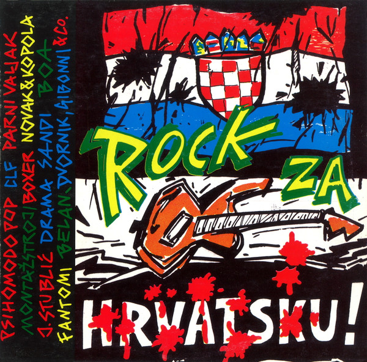

LP
Rock Za Hrvatsku!
Various
Media: — · Sleeve: —
—
Personal
Discogs SuggestedCA$87.06
Discogs MedianCA$87.06
Discogs HighCA$87.06
- Physical Copy ID
- BB-LP-352
- Year
- 1991
- Label
- Croatia Records
- Catalog #
- LP-6 2 03557 1
- Country
- HRCroatia
- Genre / Style
- Electronic, Rock · Techno, Pop Rock, Punk